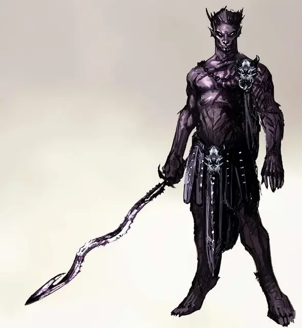

Граз'зт
Graz'zt
Большое Исчадие (Демон), хаотично-злое, именной НИП

Класс Доспеха 20 (природный доспех)
Хиты 346 (33к10 + 165)
Скорость 40 футов
| мод | спас | ||
|---|---|---|---|
| СИЛ | 22 | +6 | +6 |
| ЛОВ | 15 | +2 | +9 |
| ТЕЛ | 21 | +5 | +12 |
| мод | спас | ||
|---|---|---|---|
| ИНТ | 23 | +6 | +6 |
| МДР | 21 | +5 | +12 |
| ХАР | 26 | +8 | +8 |
Навыки Восприятие +12, Обман +15, Проницательность +12, Убеждение +15
Сопротивление урону огонь, холод, электричество
Иммунитет к урону яд; немагический дробящий, колющий, рубящий
Иммунитет к состояниям отравление, очарование, испуг, истощение
Чувства истинное зрение 120 футов, пассивное Восприятие 22
Языки Все, Телепатия 120 фт.
Опасность 24 (62000 опыта)
Бонус мастерства +7
Особенности
Легендарное сопротивление (3/день). Если Граз’зт проваливает спасбросок, он может вместо этого сделать спасбросок успешным.
Сопротивление магии. Граз’зт совершает с преимуществом спасброски от заклинаний и прочих магических эффектов.
Культ ГРАЗ’ЗТа. Граз’зт дарует своим прислужникам особые способности. Его сектанты получают способность Наслаждение болью, а лидеры культа – способность «Повелитель удовольствий».
Наслаждение болью. Когда по существу совершается критическое попадание, оно может реакцией совершить одну рукопашную атаку оружием.
Мастер удовольствий. Получив урон, это существо может реакцией магическим образом дать 5 временных хитов себе и трём (или меньше) союзникам в пределах 30 футов.
Действия
Мультиатака. Граз’зт совершает две атаки Волной скорби. Он может заменить одну из атак Использованием заклинаний.
Волна скорби (Двуручный меч). Рукопашная атака оружием: +13 к попаданию, досягаемость 10 футов, одна цель. Попадание: 20 (4к6 + 6) урона силовым полем плюс 14 (4к6) урона кислотой.
Использование заклинаний. Граз’зт накладывает одно из следующих заклинаний, используя Харизму в качестве базовой характеристики и без использования материальных компонентов (Сл спасброска от заклинаний 23):
• Неограниченно: очарование личности [charm person], обнаружение магии [detect magic], рассеивание магии [dispel magic];
• 3/день каждое: тьма [darkness], подчинение личности [dominate person], телекинез [telekinesis], телепортация [teleport];
• 1/день каждое: подчинение чудовища [dominate monster], высшая невидимость [greater invisibility].
Телепортация. Граз’зт магически телепортируется со всем снаряжением, которое он носит на себе или с собой, на расстояние до 120 футов в незанятое место, которое он может видеть.
Бонусные действия
Изменение внешности. Граз’зт принимает форму существа, похожего на гуманоида Среднего размера, или же возвращается обратно в свою истинную форму. За исключением размера, он сохраняет все свои характеристики в любой форме. Любое снаряжение, которое он носит на себе или с собой, не трансформируется.
Реакции
Отмена заклинания (перезарядка 5–6). Граз’зт пытается прервать заклинание, накладывание которого он видит, в пределах 60 футов. Если заклинание 3-го уровня или ниже, заклинание проваливается и не оказывает никакого эффекта. Если заклинание 4-го уровня или выше, Граз’зт совершает проверку Харизмы Сл, равной 10 + уровень заклинания. В случае успеха заклинание проваливается и не оказывает никакого эффекта.
Легендарные действия
Граз’зт может совершить 3 легендарных действия на выбор из перечисленных ниже вариантов. Лишь одно легендарное действие может быть совершено за один раз, и только в конце хода другого существа. Граз’зт восстанавливает истраченные действия в начале своего хода.
Атака. Граз’зт совершает одну атаку Волной Скорби.
Танцуй, моя куколка!. Одно существо, очарованное Граз’зтом, которое он может видеть, должно использовать свою реакцию на то, чтобы переместиться на свою скорость туда, куда укажет Граз’зт.
Магия Бездны. Граз’зт использует Телепортацию или Использование заклинаний
Логово
Главное логово Граз’зта – его Серебряный Дворец – грандиозное строение в городе Зелатаре, расположенном в домене Бездны Аззатаре. Безумное влияние Граз’зта волнами выплёскивается из него, искажая реальность в его окрестностях. Граз’зт способен исказить своим безумием конкретную область, затратив на это некоторое количество времени. Логово Граз’зта представляет собой притон роскоши и гедонизма.Оно наполнено нарядами и украшениями столь декадентскими,что даже богатейшие смертные покраснели бы от вида этого изобилия. В логове Граз’зта его последователи, рабы и подданные вынуждены утолять жажду зрелищ и удовольствий Граз’зта.
Действия логова
При значении инициативы «20» (проигрыш при ничье), Граз’зт может совершить действие в логове, чтобы создать один из следующих эффектов; он не может использовать один и тот же эффект два раунда подряд:
• Приказ. Граз’зт накладывает заклинание приказ [command] на каждое существо в логове по его выбору. Ему не обязательно видеть каждого, но ему необходимо знать о том, что конкретное существо находится в его логове, чтобы сделать его целью заклинания. Он отдаёт один и тот же приказ всем целям.
• Создание зеркал. Гладкие поверхности в логове становятся зеркальными. До тех пор, пока не будет использовано другое действие в логове, существа, находящиеся в логове, получают помеху на проверки Ловкости (Скрытность) при попытках спрятаться.
Местные эффекты
Область, в которой расположено логово Граз’зта, искажается его магией, и на этой территории появляется один или более из следующих эффектов:
• Зеркала повсюду. Каменные или металлические плоские поверхности, расположенные на расстоянии до 1 мили от логова, становятся крайне отражающими, как если бы были отполированы до блеска. Эти поверхности становятся неестественно зеркальными.
• Возбуждённые животные. Дикие звери в пределах 6 миль от логова часто конфликтуют и спариваются друг с другом, и их поведение соответствует брачному сезону.
• Соблазнительное Царство. В радиусе 6 миль от логова все проверки Харизмы (Убеждение и Выступление) совершаются с преимуществом, а все проверки Мудрости (Проницательность) совершаются с помехой.
Если Граз’зт умирает, эти эффекты прекращаются в течение 1к10 дней.
Описание
Внешность Тёмного Принца говорит о том, что не все красивое можно назвать хорошим. Граз’зт, чей рост чуть ли не 9 футов (2,74 м) – это идеальное воплощение необузданного вожделения, и каждый сантиметр его тела, каждый взгляд его горящих глаз обещают наслаждение и боль. В его красоте наблюдаются лёгкие черты «неправильности», от жестоких черт до шестипалых рук и ног.
Граз’зт предпочитает быть окружённым лучшими благами и привлекательнейшими слугами, и украшает себя одеяниями из шёлка и кожи поразительного и пугающего качества. Его логово и логова его прислужников– это дворцы удовольствий, в которых нет запретов, кроме доброты и умеренности.
Культы, посвящённые ему, являются тайными сообществами, члены которых потакают любым своим желаниям, и часто развращают других через шантаж, манипуляцию и играя на зависимостях. Они часто носят алебастровые маски с выражениями экстаза на них, и надевают вызывающие наряды и украшения на свои сходки.
Несмотря на то, что Граз’зт предпочитает очарование и манипуляцию, он способен на ужасающую жестокость, если его спровоцировать. Он сражается двуручным мечом Ангдрельвом, Волной Скорби – волнистым и очень острым клинком, извергающим кислоту по его приказу.